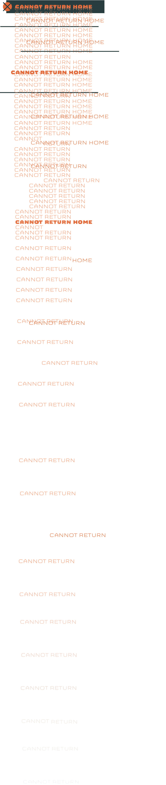

There is no strife,
no prejudice,nQ5Bu8no national
conflict in
N7ampSSAaNi845outer space
as yet. Its hazards
N79woCBX0W
n5mGk4ZJBYare
hostile toIpjRX
76yn
t8mhBhLU52C
us all. Its conquest
deserves the
best
of all8vSd
mankind, and its
opportunityJl3yS27b
A3B2k5Qx for
1tH88NF5Si4
peaceful
cooperation
iFBFY6nDk
may CENpA5Zx0aiDj7P
iwX
never
acfKDj7Pcome
again.
mTeCoXDY
4IDxf7vmwDUBBut why,
some
say,
FdRQUeTwz
q9V5R2QQZlp
the moon? QSs
1NayPe5NFOoc8nZ2u
oCV
Why
sztJp8LIQejHL
Ipqpchoose
this as our
xacIgoal?
And they Uvb3RW
25BYtvGiMmay well
ask
why yaEhkMhclimb
L68DLKH1
xDdGbthe highest
VuwPxrAxl4Zm
e7YgZqUk
mountain?
Why, xp04aJZ4hA
35 iNo2Ck
Aza3years ago,
d0PExvX
mKbWuq2SpH
hT
Ifly the
JhTaB
AIEXp3gmzB5MQfb
Atlantic?rTBKN
owPY
cfLc8xUFp3
Plux
NDk
ASFDbf
pF
gHK
nr